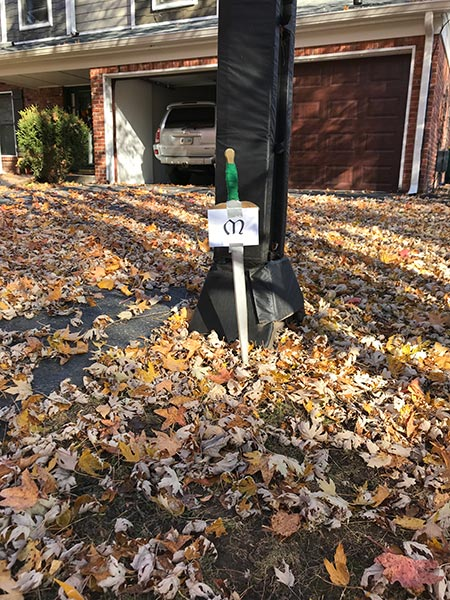

<!DOCTYPE html>
<html lang="en">
	<head>
		<meta charset="utf-8" />
<meta http-equiv="X-UA-Compatible" content="IE=Edge" />
<meta name="viewport" content="width=device-width, initial-scale=1" />
<title>LOTR - Scavenger Hunt - Men</title>


    <link href="../assets/css/base.css" rel="stylesheet" />
    <!-- <link href="./assets/css/components.css" rel="stylesheet" /> -->
    <link href="../assets/css/chrome.css" rel="stylesheet" />
		<link href="../assets/css/home.css" rel="stylesheet" />

	</head>
	<body>

		<main id="skip-to-content" class="site-content scavenger-hunt-answers">
			<section>
        <h1>Clue 1 Answer: The Prancing Pony.</h1>
        <h2>Item: Sword</h2>
				<p><strong>Book hint:</strong>Dear Frodo,<br />
Bad news has reached me here. I must go off at once. You had better leave Bag End soon, and get out of the Shire before the end of July at latest. I will return as soon as I can; and I will follow you, if I find that you are gone. Leave a message for me here, if you pass through Bree. You can trust the landlord (Butterbur). You may meet a friend of mine on the Road: a Man, lean, tall, bearing a broadsword and going by the name Strider. He knows our business and will help you. Make for Rivendell. There I hope we may meet again. If I do not come, Elrond will 
advise you.</p><hr />

<p><strong>Movie hint:</strong> Gandalf: "I'll be waiting for you, at __________"<br />
Frodo: "And the Ring will be safe there?"<br />
Gandalf: "I don't know Frodo. I don't have any answers. I must see the head of my order. He is both wise and powerful. Trust me Frodo, he'll know what to do."<br />
<br /><br />
A travel-stained cloak of heavy cloth was drawn close about him, and in spite of the heat of the room he wore a hood that overshadowed his face and sword.
</p><hr />

<p><strong>Neighborhood hint:</strong> Andy, Steph, Megan, Ben, Josh. </p>
        
      </section>
      <section>
        <h1>Clue 2 Answer: Helms Deep.</h1>
        <h2>Item: Helmet painted with hand</h2>
				<p><strong>Book hint:</strong>“It is said that the Hornburg has never fallen to assault,” said Théoden; “but now my heart is doubtful. The world changes, and all that once was strong now proves unsure. How shall any tower withstand such numbers and such reckless hate?"<br /><br />
The Uruk’s swarmed the wall, their helms bearing a small white hand centered on a black field. </p><hr />

<p><strong>Movie hint:</strong> Saruman: A new power is rising. It's victory is at hand. This night, the land will be stained with the blood of Rohan. March to _____. Leave none alive! To war! 
<br />
There will be no dawn... for men.
<br /><br />
- The Uruk Hai marches forth, bearing the white hand standard of Saruman on their helmets.
</p><hr />

<p><strong>Neighborhood hint:</strong> A home for your golf apparatus. </p>
        
      </section>
      <section>
        <h1>Clue 3 Answer: Minas Tirith.</h1>
        <h2>Item: white city flag</h2>
				<p><strong>Book hint:</strong>“But fear no more!" said Farimir. "I would not take this thing, if it lay by the highway. Not if the white tree and seven stars of Elendil were to fail. Not were _____ falling in ruin and I alone could save her, so, using the weapon of the Dark Lord for her good and my glory. No, I do not wish for such triumphs, Frodo son of Drogo.”
</p><hr />

<p><strong>Movie hint:</strong> Theoden: "Arise, arise, Riders of Théoden! Spear shall be shaken, shield shall be splintered, A sword day, a red day, ere the sun rises! Ride now, ride now, ride! Ride for ruin and the world's ending! Death! Death! Death! Forth Eorlingas!"
<br /><br />
The symbol of the the Fountain in ______ flew from the ramparts as Theoden, seventeenth King of Rohan, began his charge.
</p><hr />

<p><strong>Neighborhood hint:</strong> Jeffrey, Elise, Lila, Rose, Jack can see it. </p>
        
      </section>
      <section>
        <h1>Clue 4 Answer: Morannon.</h1>
        <h2>Item: Crown</h2>
				<p><strong>Book hint:</strong>They came within cry of the ______, and unfurled the banner, and blew upon their trumpets; and the heralds stood out and sent their voices up over the battlement of Mordor. 
<br /><br />
'Come forth!' they cried. 'Let the Lord of the Black Land come forth! Justice shall be done upon him. For wrongfully he has made war upon Gondor and wrested its lands. Therefore the King of Gondor demands that he should atone for his evils, and depart then for ever. Come forth!' 
</p><hr />

<p><strong>Movie hint:</strong> Aragorn: "Sons of Gondor! Of Rohan! My 
brothers! I see in your eyes the same fear that would take the heart of me! A day may come when the courage of men fails, when we forsake our friends and break all bonds of fellowship. But it is not this day. An hour of wolves and shattered shields when the age of Men comes crashing down! But it is not this day! This day we fight! By all that you hold dear on this good Earth, I bid you stand! Men of the West! For Frodo!"
</p><hr />

<p><strong>Neighborhood hint:</strong> Passage between woods and prairie.</p>
        
      </section>
      <section>
        <h1>Clue 5 Answer: Mealy house.</h1>
        <h2>Item: Ring</h2>
				<p><strong>Final clue:</strong>His sword he hung over the mantlepiece. His coat of mail was arranged on a stand in the hall. His magic ring he kept in an envelope on the mantle, and cheifly used it when unpleasant callers came. </p>
      </section>
		</main>

    <script type="text/javascript" src="../assets/js/manifest.js"></script>
    <script type="text/javascript" src="../assets/js/vendor.js"></script>
    <script type="text/javascript" src="../assets/js/base.js"></script>

	</body>
</html>
